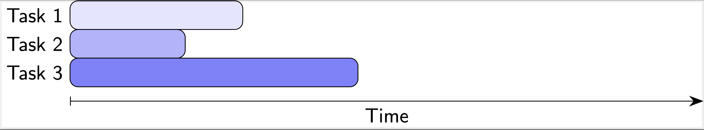

PDC@UNL
Parallel Computing
Background
Multitasking can save a lot of time when performing everyday tasks. For example, if you need to boil water for cooking a meal, you wouldn’t just stand and watch the water warm up to the boiling point. Instead, you would work on other tasks like cutting vegetables or measuring how much pasta to cook. In a restaurant kitchen, you would need to simultaneously coordinate tasks based on various skills and responsibilities to prepare dishes. Multitasking does not reduce the total amount of work required, but it does let you complete that work in less time.
Computing takes advantage of similar multitasking concepts, but in general, a single processor can execute only one process, task, or operation at a time. However, if one operation needs to complete before another, such as boiling water before putting pasta into the pot, a processor can switch from its current process to perform others instead of sitting idle. Modern computers have multiple processors or cores so they can perform multiple tasks in parallel or at the same time. As with preparing food, a computer cannot reduce the total amount of work, but parallel execution can greatly reduce the overall time needed to execute that work.
Sequential vs. Parallel Computing
Sequential Computing
Sequential Computing is the traditional way we think about computing. A program's statements execute in sequential order, one after the other. For example, the following "code" has three distinct statements:
statement A;
statement B;
statement C;
each statement would execute in the order written: first A,
then B, then C. Importantly, a statement would
only execute after the previous statement completely finishes. If a
statement consists of multiple operations, the whole expression would
be evaluated before moving on. This next example shows an addition and
subtraction which must both be done before assigning the value to the
variable r:
r = x + y - z;
statement B;
and only after that would statement B execute. We can visualize
these sequential operations as general tasks that must be completed
before beginning the next task along a timeline.

This chart shows how each task must fully execute before beginning the next task.
Concurrency & Parallel Computing
We’ve seen how sequential computing can be inefficient because only one task can be done at a time, but certain other tasks could be done simultaneously. It wouldn’t matter if you are only able to do one thing at a time, but if you can multitask, you can work more efficiently.
Concurrency is the ability of a computer to perform different tasks (or even different parts of a program or algorithm) at the same time, not necessarily in sequential order, without affecting behavior or correctness of a program.
One way of achieving concurrency in computing is through parallel computing which means more than one task executes at the same time. The following example demonstrates 3 tasks running all at the same time.

Generally, parallel computing requires each task to execute on a different processor or core, but the advantage is clear: if we execute more than one task at the same time, the overall time required to complete all tasks can be reduced significantly. For example, if the time required to complete all tasks sequentially is 20 seconds but we evenly divide it among 4 processors, the total "wall clock" time would only be 5 seconds!
Activities
To understand these concepts further, you will engage in several demonstrations.
1. Parallel Computing Visualization
Click the "Start Visialization" button below to launch our simulation and visualization of parallel computing. The simulation allows you to generates a certain number of tasks and places them in a "task queue" where they wait to be executed. You can select the number of tasks to generate and how long they will take to execute. You can make them all take the same number of seconds from two to six or they will be randomized by default. You can also specify how many processors each simulation can use.
- Run the simulation with only 1 processor and 10 tasks and observe the results. Note that the total CPU time (upper right) is equal to the total "wall clock" time.
- Run the simulation again with 2 processors and the same number of tasks.
- Run the simulation again with 4 processors.
- Play around with the simulation with a different number of tasks, processors, and
times and answer the following:
- When you went from 1 processor to 2 processors what was the difference in the elapsed time you observed? What about the difference from 2 to 4 processors?
- When you went from 1 processor to 2 processors what was the difference in the CPU time you observed? What about the difference from 2 to 4 processors?
- Was the work (number of tasks) always equally distributed among all the processors? Why or why not?
- Was the work (total time) always equally distributed among all the processors? Why or why not?
2. Parallel Computing Code Demonstration
In this activity, you will use parallel computing to speed up computations which would otherwise take a significant amount of time using traditional methods.
Start Demo3. Parallel Computing Code Tutorial (optional)
In this optional activity, we will walk you through a tutorial on using OpenMP in C which allows you to use some very simple code to automatically parallelize your code!
Start Tutorial